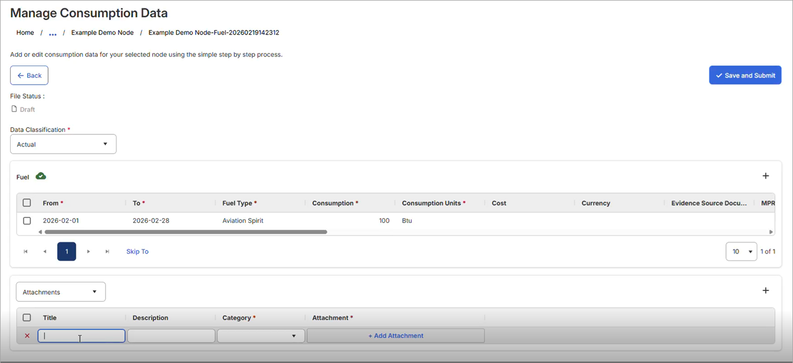

Input Form - Electricity (Grid), Fuel, Water, and Heat (Grid)
As of v26.1, data is entered for these data sources in a new Manage Consumption Data page. Supporting notes and attachments are added on the same page. This will be available for the remaining activity types in a future release.
To enter new data for the above consumption types, click its Input Form link on the main Consumption page. The new Manage Consumption Data screen opens.

To add a new row of data, click the + button (top right of the table) and populate the data in the relevant columns.
Mandatory columns are indicated by an asterisk in the column header.
Some columns are dependent on one another (e.g. the Cost and Currency columns). If data in one is populated for a row, data must also be populated in the other. If that is not done for two dependent columns, you will be reminded when you click Save Changes.
If you made changes prior to clicking Save Changes that you don't want to keep, click Discard to discard those particular changes and revert to the last saved version. A row added but not yet saved can be discarded by clicking the X button to its left. A saved row can be discarded by clicking the check box next to the row and clicking Delete at the upper right. Deleting a row cannot be undone, and deletion of the last remaining row will delete the entire file.
When you are finished making your updates, click Save Changes. That updates the status of the file to Draft.
You can make additional edits to saved rows by clicking into them and updating your selection(s).
To add notes or attachments, use the section below the data rows. Select either Notes or Attachments from the drop-down, click + to add a row, and fill in the relevant fields. For an attachment click + Add Attachment to add one, then click Save Changes.
What happens next? New Draft status!
The 26.1 release introduces the Draft status for upload files. The Draft status exists before any variance review, approval, or calculation status and is applicable to the activity types using the new tabular data entry: Electricity (Grid), Fuel, Water, and Heat (Grid). Additional activity types will begin using Draft status in a subsequent release.
Files are set to Draft status upon clicking Save Changes. This means files get Draft status when entering and saving new data using input form or API, or through saving edits to existing files. A list of files in Draft status can be seen in the Status Hub.
Once you have made all the changes you need, files can be progressed beyond the Draft status by clicking the Save and Submit button, which saves any unsaved changes and sends the file to the next stage of the approvals workflow.
If variance thresholds are turned on and your upload exceeds the expected variance, you will be prompted with a pop-up. Click Add Now to add an explanation for the variance and proceed with the upload, or click Add Later to provide the explanation at some time after the upload and proceed.